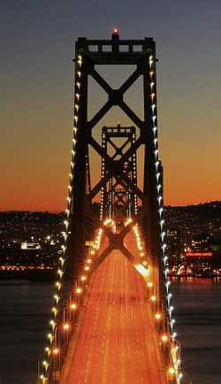

The Bay Area JazzBeat is a ficticious, self-promotional site I've constructed to demonstrate my coding skills. While I did design this site as well, my primary focus is on web developement and maintenance, and any bells and whistles on this site are more for that purpose.
You'll note that this site is not completely "fleshed out." The framework could easily grow to a thousand pages with all the jazz artists and venues in the Bay Area alone, and, it was definitely created with WordPress in mind; I'm currently working on the WordPress theme version, due out in March.
The artists and venues listed are authentic, but most of the remainder is either ficticious or outdated. That being said, I didn't select the topic at random. I regard jazz the be best of all the original art forms that have emminated from the United States, or, as one musicain put it, Jazz is the true American classical music. I've also selected artists working right now, and the featured performers are my favorites. Though my goal is to show what I can do in the hopes of landing a developer position, I also hope this brief introduction will lead some of you to give of few of these performers a listen-that would truly be the highest compliment I could recieve.
- Rich Quigley